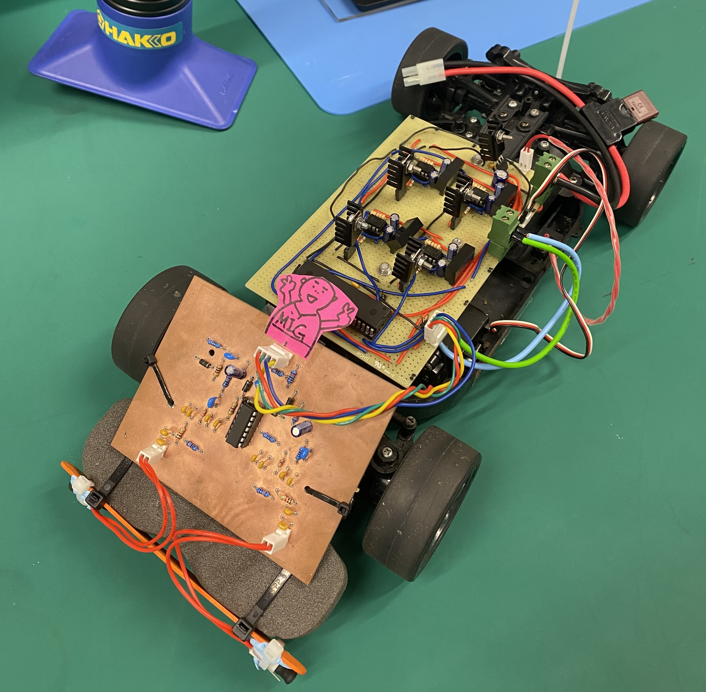

Self-Guided Inductive Vehicle with Embedded Control Systems
Institution: Newcastle University

This project involved the design and development of an autonomous inductive line-following vehicle using an Atmega16 microcontroller. The buggy was equipped with real-time Proportional-Derivative (PD) control to steer and manage propulsion based on feedback from inductive sensors embedded in the track.
Key Contributions
- Designed and implemented embedded control logic for real-time steering and speed regulation
- Developed modular hardware subsystems for sensing, actuation, and processing
- Fabricated and debugged PCBs, addressing signal noise and interference through waveform analysis
- Tested performance on complex curved tracks and optimized stability and responsiveness
Demo
Methodology
Motor & Gate Driver
A brushed DC motor was driven using a custom gate driver circuit, enabling variable speed control through PWM modulation. The gate driver was manually debugged to handle current surges and prevent back-EMF spikes.
Sensor & PCB Design
The vehicle followed the track using inductive sensors positioned under the chassis. A custom PCB was designed in Eagle to host the analog front-end and filter circuits that processed sensor outputs before feeding them into the MCU.